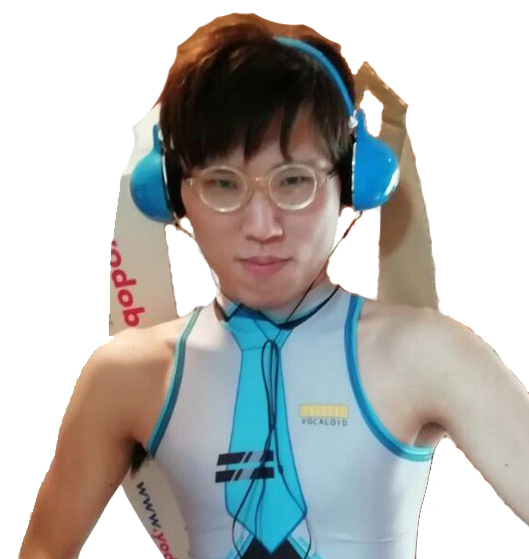

序章:ようこそ我らがニートの王のホームページ

この度は僭越ながら我らがニートの王のホームページへようこそおいでくださいました。
ここは決してニートを賛美するようなサイトではありません。ましてや、そのような風習、因習は批判されてしかるべきでありましょう。彼は何が言いたいのかというと人目をあまり気にせず自分の思ったと通りに生きてみなさいという意味であります。
それは決して平坦な道のりではないかもしれません。あまりにもつらく険しい道のりなのかもしれません。しかしながら、自由には責任が伴います。例え今が辛くても耐えがたき耐え忍び難きを忍ぶ、そのような忍従も多少なりとも必要なのかもしれません。
駄文失礼いたしました。それではニートの王が送る奇妙な世界をその身を持って体験していってください。そして後悔してください（笑）
ニートな奴ら
第一章:あほな奴ら

非常に残念なことにここは極楽浄土ではなく阿鼻叫喚である。『信じる者は救われる』そのようなことをメシアたるイエスキリストは発言していたが、答え間違いなく『ＮＯ』である。社会の上層の人間が底辺を這いつくばる我々をなだめかすために適当に偽善的な耳心地のよい言葉や美辞麗句、上っ面だけで並べているだけだ。私は現在ゲームを制作しているが、絶賛とは言わないが、まあまあな評価を得ている。こんな底辺同然の人間が無い知恵を絞って作ったゲームなどなぜ欲しがるのであろうか？そこまで考えて作っていないにも関わらずそこそこ頭のいい人間どもがああでもないこうでもないと『脳』というメインエンジンをフル回転させて必死こうでないか？そうでないか？と考察を行う。熱狂的なファンを前にして私は『そんなこといちいち考えてつくるわけないじゃん』など言うことなど口が裂けて言えず適当にああ、そうですか・・・。と相槌をうちながら軽やかに右から左に受け流す。
まあ内心そういう人間ども私は馬鹿にしている。言わないけどね。
閑話休題
まずこれをみてほしい
私の好みの女性である。だから何だという話ではあるが、例えば諸兄にタイプの女性がいたとしてこの際二次元や三次元などは含まないが、仮にその可愛さや魅力などを力説してみたとしよう。しかし、その対象に興味のない人間からしてみれば『ふーん、で？』で終わってしまう話である。それは話をする側としてみれば誠に遺憾であり、屈辱を感じる出来事である。オタクという生き物は所詮その程度なのである。頭の中でどれだけ壮大なことを思い描いたとしてもそれは相手を納得させたり抱腹させたりするものではない。
ただ絵空事の理想を並べて、普段人が口にするが決して口にすることないくだらない机上の空論なのだ。
最終章：そして誰もいなくなった
一体なぜこんなことになってしまったのであろう・・・・？決して努力はしてこなかったし、あまり勉学も好きではなかった。まあそれこそが今に至るまでの答えでもあるのだが、